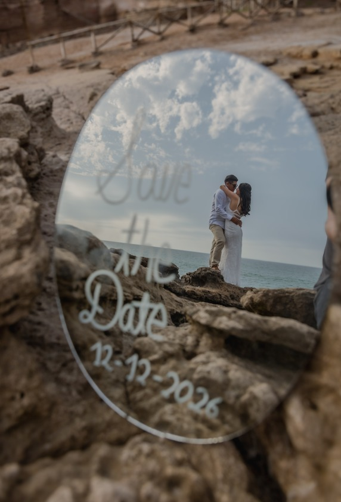
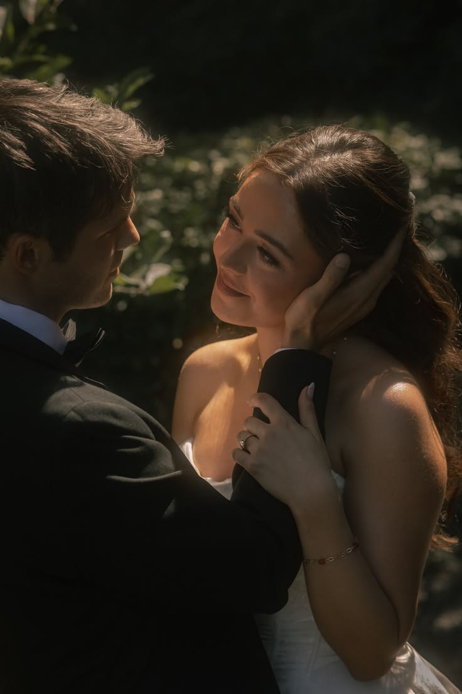
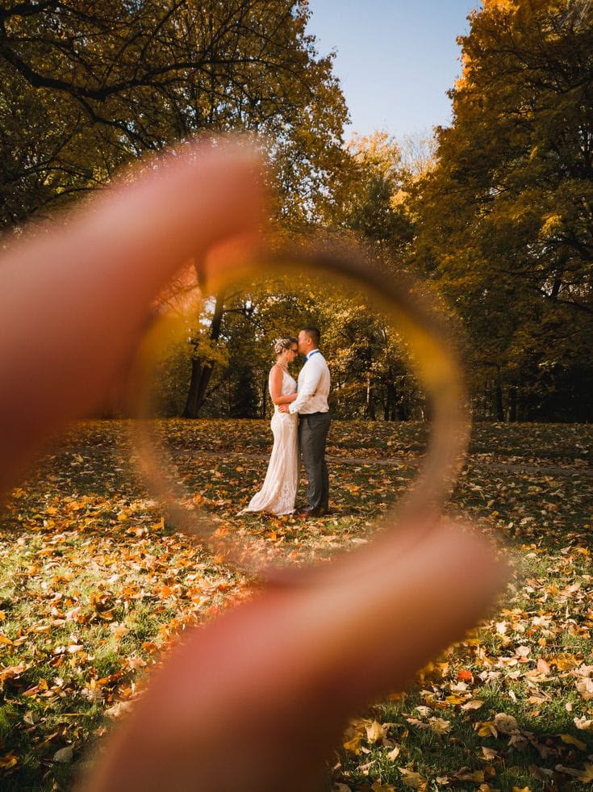
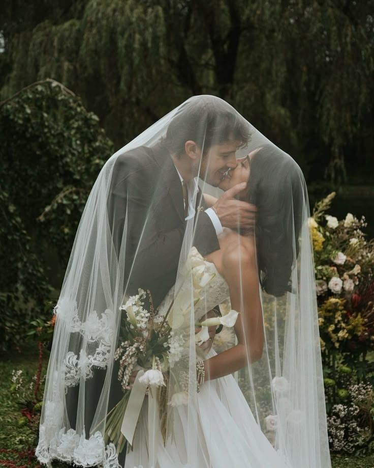
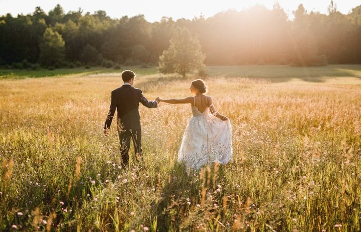
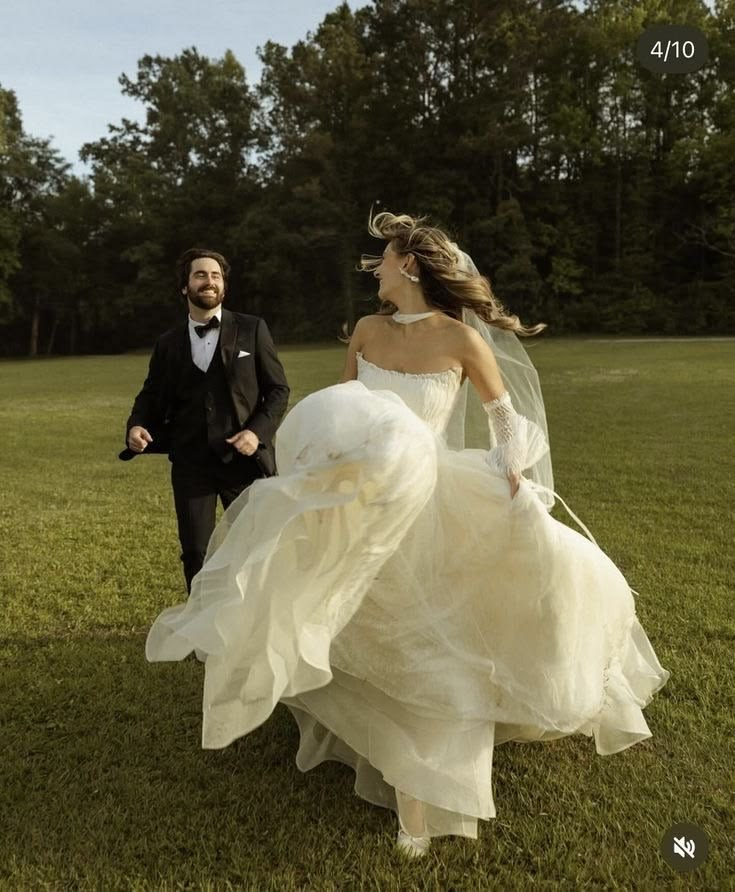
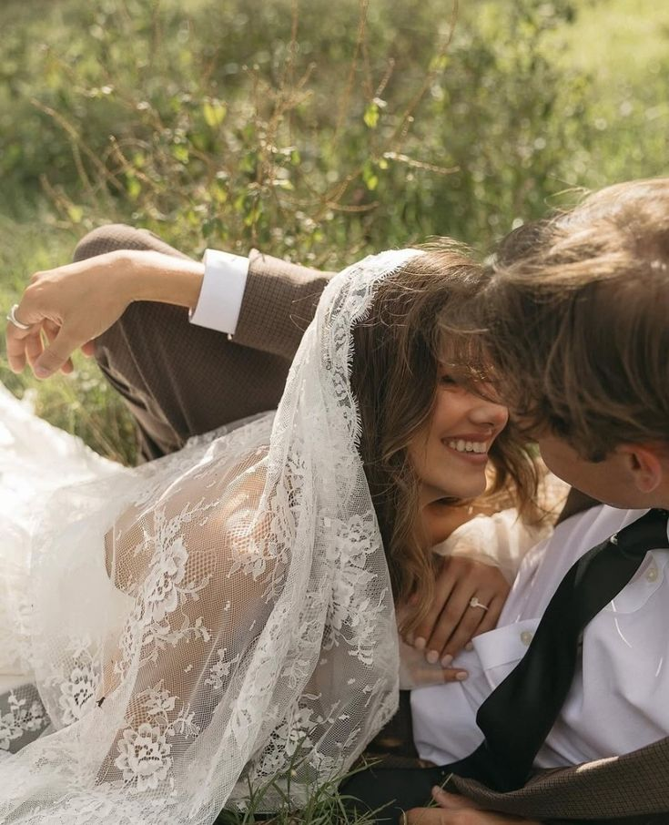

Zuhey & Gino
NOS CASAMOS
Tenemos el honor de invitarte a celebrar nuestro matrimonio.
Dos almas que eligieron caminar juntas.
12 de diciembre de 2026
Santa María de Huachipa
Lima, Perú
El sonido de nuestra historia
Nuestra canción
[NOMBRE DE LA CANCIÓN]
Presioná reproducir para escuchar.

Cada vez más cerca
12 · 12 · 2026
hasta que nos demos el «sí»
Les damos la bienvenida
Ceremonia & Recepción
Lima, Perú
Para la ocasión
Dress Code
[DRESS CODE]
[Descripción o indicaciones adicionales sobre la vestimenta]
El día
Itinerario
-
[HORA]Llegada de invitados
-
[HORA]Ceremonia
-
[HORA]Recepción y cóctel
-
[HORA]Cena
-
[HORA]Fiesta y celebración
Nuestra historia
Momentos





Con tu cariño
Nuestro próximo destino
Tu presencia es nuestro mejor regalo.
Pero si deseas tener un detalle con nosotros,
puedes ayudarnos a sumar kilómetros
para nuestra próxima aventura juntos.
Alias
Una velada íntima
Una noche para celebrar
Hemos preparado esta celebración como una experiencia exclusiva para adultos.
Agradecemos que nos acompañes sin niños.
Para nosotros es importante
¿Nos acompañas?
Nos encantará compartir este día contigo.
Por favor confirma tu asistencia antes del
[FECHA LÍMITE].
La confirmación de asistencia estará disponible pronto.
¡Gracias por confirmar!
Nos hace mucha ilusión compartir este día contigo.